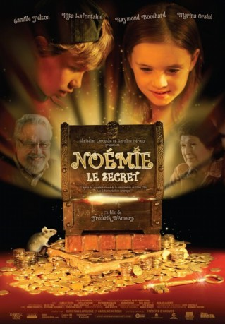

#11441 Das Geheimnis von Noemie
Alternativ: Noémie: Le secret (Englischer Titel)
 
 IMDB-Wertung: 6.6 / 10
IMDB-Wertung: 6.6 / 10  Metascore: 0
Metascore: 0 
Noémie learns of a treasure that is possibly hidden in her neighbor's house and she is going all out to find it.
Jahr: 2009
Dauer: 104 Minuten
FSK: 0
Land: Kanada Studio: Koch MediaTonspuren: DTS - ,
Untertitel:
Auflösung: 1080p (1920x1080) Größe: 9779 MB
Genre: Familie
Regisseur: Frédéric D'Amours
Drehbuch: Marc Robitaille, Gilles Tibo
Soundtrack: Mario Sévigny
Darsteller:
- Rita Lafontaine als Madame Lumbago
- Raymond Bouchard als Émile Lumbago
- Paul Doucet als François
- Marina Orsini als Jeanne
- Édith Cochrane als Madame Cynthia
- Catherine Bégin als Micheline
- Mario Tessier als Agent #1
- Michel Dumont als Monsieur Bellemare
- Kim Lambert als Vendeuse / caissière
- Antoine Vézina als Garçon resto chic
- Danièle Lorain als Caissière banque
 Sharlene Royer als Infirmière de Madame Lumbago
Sharlene Royer als Infirmière de Madame Lumbago- Carmen Sylvestre als Compagne de chambre
- Stéphane Lefebvre als Coordonnateur de cascades
- Jean Frenette als Coordonnateur de cascades / Doublure Micheline
 Mike Chute als Coordonnateur de cascades
Mike Chute als Coordonnateur de cascades- Michael Scherer als Chauffeur cascadeur
- Michel Gregory Dagenais als Angry Client (uncredited)
- Carole B. Thomas als Louise (uncredited)
- Camille Felton als Noémie
- Nicolas Laliberté als Françis
- José Gaudette als Agent #2
- Jean Antoine Charest als Serrurier
- Maxime Allard als Gardien banque
- Isabelle Drainville als Réceptionniste hôpital
- Francis Robitaille als Frère de Francis-13 ans
- Julien Marchand-Desranleau als Frère de Francis-10 ans
- Noémie Robitaille als Soeur de Francis
- Marie-Claude Sabourin als Infirmière soins intensifs
- Jeanne Ostiguy als Passante #2
- Andrew Campbell als Type au crâne rasé
- Alexandre Cadieux als Homme au parapluie
- Sonny Hill als Commis de banque
- Nathalie Girard als Femme sexy
- Marie-Lise Bernier als Cliente de la banque
- Viviane Renard als Gardienne-1967
- Camille Farré als Jean-3 ans
- Josee Lacombe als Madame Lumbago-20 ans
- René Rousseau als Émile Lumbago-22 ans
- Arlette Beaudry als Femme au chevet
- Gaston Dussault als Vieil homme aux soins intensifs
- Chantal Dumoulin als Mère de Francis
- Bryan Morneau als Vendeur comploteur #1
- Gilles Tibo als Vendeur comploteur #2
- Martin Morel als Coordonnateur de cascades
- Héléna Laliberté als Doublure cascade Jeanne
Datei: X:\NEU\Geheimnis von Noemie, Das (2009, FSK0, 1920x1080).mkv seit 06.07.2019
 Es gibt insgesamt 187 Filme in der Gruppe 'NEU'
Es gibt insgesamt 187 Filme in der Gruppe 'NEU'